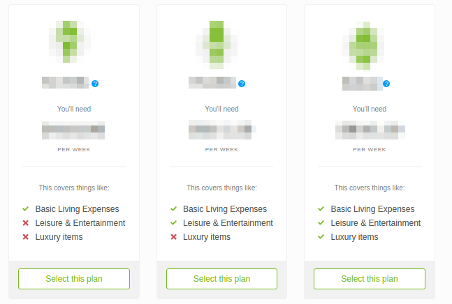

Events
clicking, scrolling, stuff like that
thing.addEventListener(type, callback, useCapture);
Browser Events: Click, Scroll, and more
Fake Events: React, Hammer.js, etc
The Problem
Clicks inside Clicks

 →
→